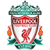

سَنتر
سَنتر
الصفحة الرئيسية
أخبار
مباريات


إحصائيات
إشتراك
تسجيل دخول
تفاصيل المباراة
التفاصيل
باريس سان جيرمان
المدرب: ماوريسيو بوتشيتينو
ليفربول
المدرب: يورجن كلوب

دورى ابطال اوروبا -دور ربع النهائى
انتهت المباراة
2 - 2
54' كيليان امبابى
81' دى ماريا
20'ساديو مانى
75'محمد صلاح
نبذة عن مباراة اليوم
يسعى كلا من فريقا باريس سان جيرمان و ليفربول الوصول الى نصف نهائى دورى ابطال اوروبا
حيث ان يرغب كلاهما فى اخذ اللقب الثمين فى ملعب حديقة الامراء فى باريس
و يحتل الفريق الانجليزى المركز التانى فى ترتيب الجدول برصيد36 نقطة فيما يحتل الفريق الفرنسى المركز الاول فى ترتيب الدورى
الفرنسى برصيد 60 نقطة ويكون اللقاء فى الساعة 9.00 مساءا بتوقيت القاهرة
و يتفوق الفريق الفرنسى على الانجليزى فى عدد مباريات الفوز حيث فاز باريس سان جيرمان
على نظيره ليفربول فى عشر مباريات من اصل خمس و عشرون مباراة و تعادلا الفريقين
فى خمس مباريات و فاز ليفربول فى خمس مباريات
| ليفربول | احصائيات المباراة | باريس سان جيرمان |
| 3 | الضربات الركنية | 1 |
| 3 | الكروت الصفراء | 1 |
| 1 | الكروت الحمراء | 0 |
| 4 | التسلل | 2 |
| 7 | التسديد على المرمى | 8 |
تشكيل الفريقين
تشكيلة ليفربول
تشكيلة باريس سان جيرمان
رجل المباراة
التقييم النهائى
8.4